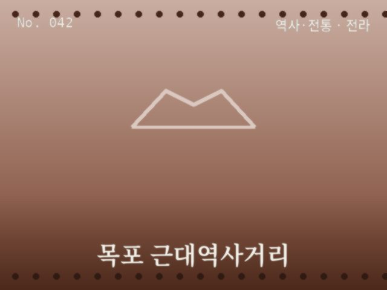
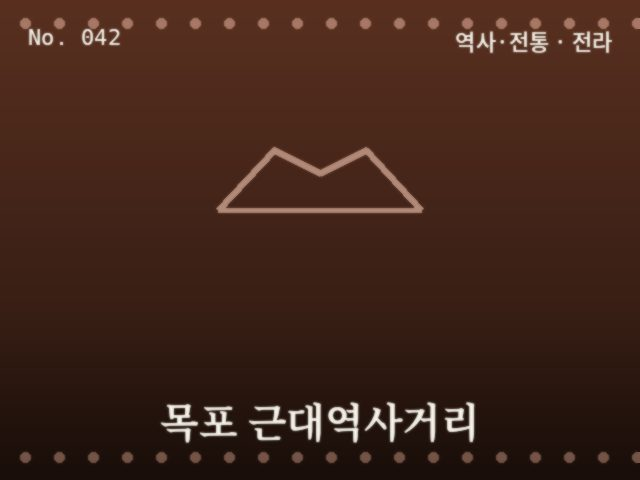

No. 042
근대 건축물이 남은 항구 거리


일제강점기에 지어진 근대 건축물들이 남아있는 거리로, 오래된 건물 외관이 이색적인 배경을 만들어 준다.
추천 시간대 — 오전 ~ 늦은 오후
촬영 팁 — 근대 건축물의 외벽 질감을 가까이서 담아보세요
이 사이트는 쿠키를 사용하여 광고 개인화 및 서비스 개선에 활용합니다. Google 애드센스는 쿠키를 사용해 관심기반 광고를 게재할 수 있습니다. 자세히 보기